Multi-agent patterns in VS Code you won't learn from docs
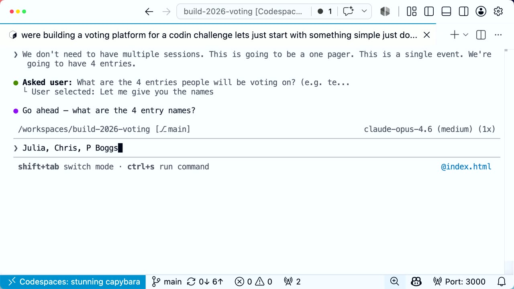
Official description
Building with one agent is familiar. Orchestrating a fleet of them in parallel across local, background, and cloud surfaces is where it gets real. You'll see the decisions that matter, how to decompose work across agents, when to fork vs. delegate, and how to verify quality when agents outnumber you. Leave with patterns for multi-agent workflows you can apply to your own codebase tomorrow. Seating for this session is first-come, first-served. Add it to your schedule to plan your day and arrive early to secure a spot.
Summary
Overview
A live "vibe coding" competition recorded at Microsoft Build, in which five practitioners race for roughly 36 minutes to build a cloud-based collaborative markdown editor, each using a different agentic surface in VS Code and GitHub Copilot. The session demonstrates multi-agent workflow patterns—planning, sub-agents, parallel work trees, and design iteration—through live building rather than slides, while the hosts simultaneously build a real-time voting app in a GitHub Codespace.
Topics covered
- Decomposing a build into committable increments versus one-shotting the whole feature with a high-reasoning model
- Using plan mode and an exploratory "conversation" with the agent before saying "go," contrasted with skipping planning entirely
- Running agents in a GitHub Codespace as a sandbox to safely let agents execute, run a server, and expose it publicly
- Multi-agent orchestration: a powerful model as planner delegating implementation to a separate model, sub-agents, and parallel git work trees
- Mixing model providers for the same task to compare output quality (GPT, Opus, Codex)
- Reusable design systems and skills (a "poster board" aesthetic) to generate and iterate on multiple UI mockups via parallelized sub-agents
- Persistence and real-time sync choices: JSON file versus SQLite, a server-side module, and WebSockets for live vote updates
- Vanilla HTML/CSS/JavaScript for small apps, pulling libraries from a CDN (unpkg) and debugging via view-source and dev tools
- Practical prompting habits: not correcting typos, using voice mode, and the idea that verbose English is inefficient for agent communication
- Using AGENTS.md to steer agents
Notable quotes
"The only way to be productive with an agent is to put it into [a sandbox] and let it do its thing. But a lot of [agents are] inherently unsafe."
"I actually don't plan... the conversation is [the plan] and you iterate on that to get to the ultimate end [result]." — Kent C. Dodds
"This is the era we're in where we just watch agents cook."
Products and tools mentioned
- Visual Studio Code
- GitHub Copilot
- GitHub Copilot CLI
- GitHub Copilot app
- Agent app
- GitHub Codespaces
- VS Code Live Share
- Monaco editor
- CodeMirror
- Next.js
- Node.js
- SQLite
- WebSockets
- unpkg
- Copilot SDK
- AGENTS.md
- Cursor
- GPT-5.5
- GPT-5.4
- Claude Opus 4.6
- Claude Opus 4.7
- Codex
- Cursor Composer 2.5
- Kimi [inferred]
Speakers featured
- Pierce Boggan — Product Manager, VS Code team; competed using the GitHub Copilot app
- Kent C. Dodds — software developer and full-time educator (JavaScript and the web); co-host building the voting app
- Burke Holland — co-host building the voting app in the Codespace [inferred]
- Julia Kasper — VS Code team; competed using agent mode and the local agent in VS Code
- Harald Kirschner — competed using the Agent app, running multiple agents across parallel work trees
- Chris Reddington — based in the UK; competed using the GitHub Copilot CLI
Note: contestant approaches—Julia (local agent mode, GPT-5.5 high reasoning, later Opus 4.6 for UI), Chris (CLI with a planner plus sub-agents, Opus planning and Codex implementing), Pierce (Copilot app, plan mode, Monaco-based editor), and Harald (research session plus three parallel prototype explorations merged into one)—illustrate distinct multi-agent strategies. The hosts' voting app used vanilla HTML/CSS/JavaScript in a public Codespace, debugging a broken QR-code CDN dependency by switching to unpkg, then persisting votes to a JSON file with a WebSocket for live updates, and finally generating ten UI mockups via parallel sub-agents using a custom "poster board" skill.
Frames
{kind=link}
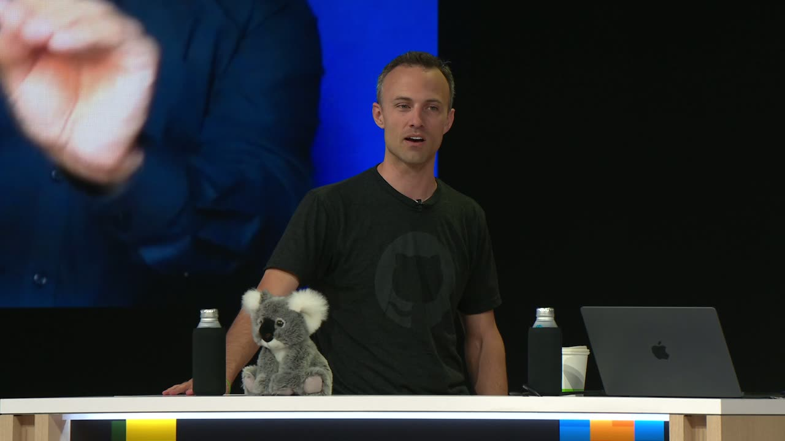
{kind=link}
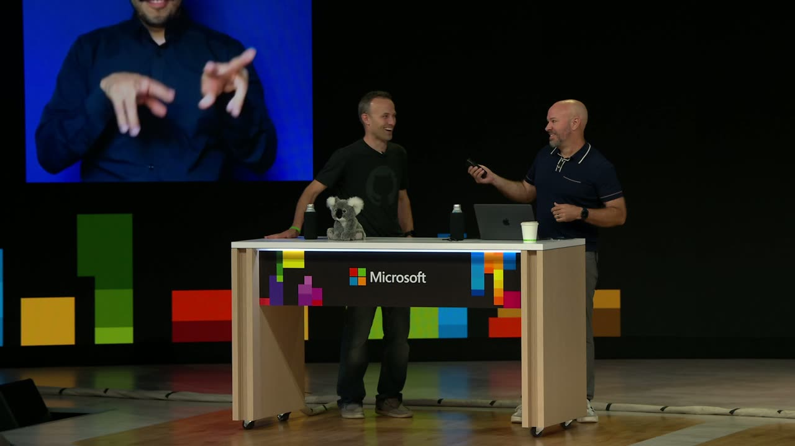
{kind=link}
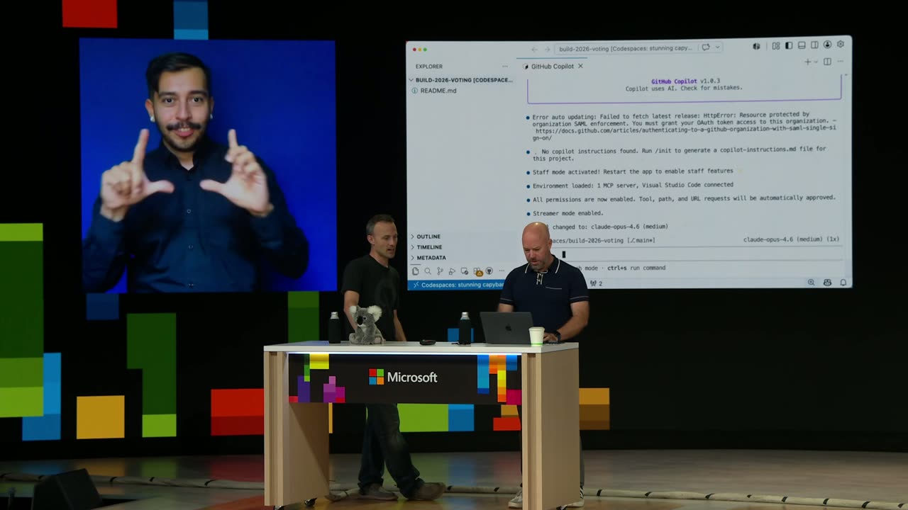
{kind=link}
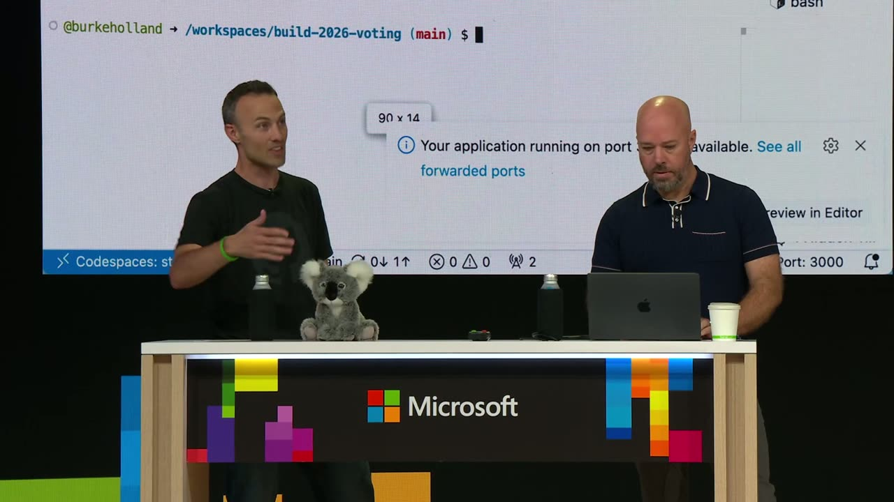
{kind=link}
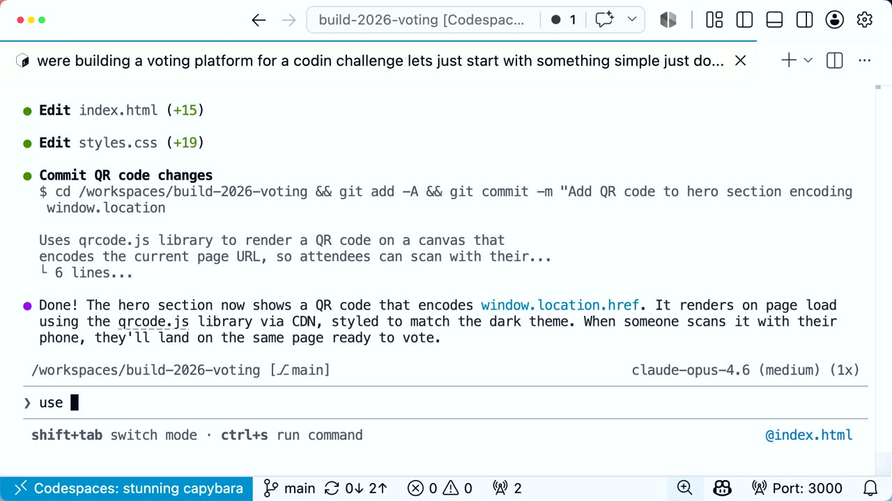
{kind=link}
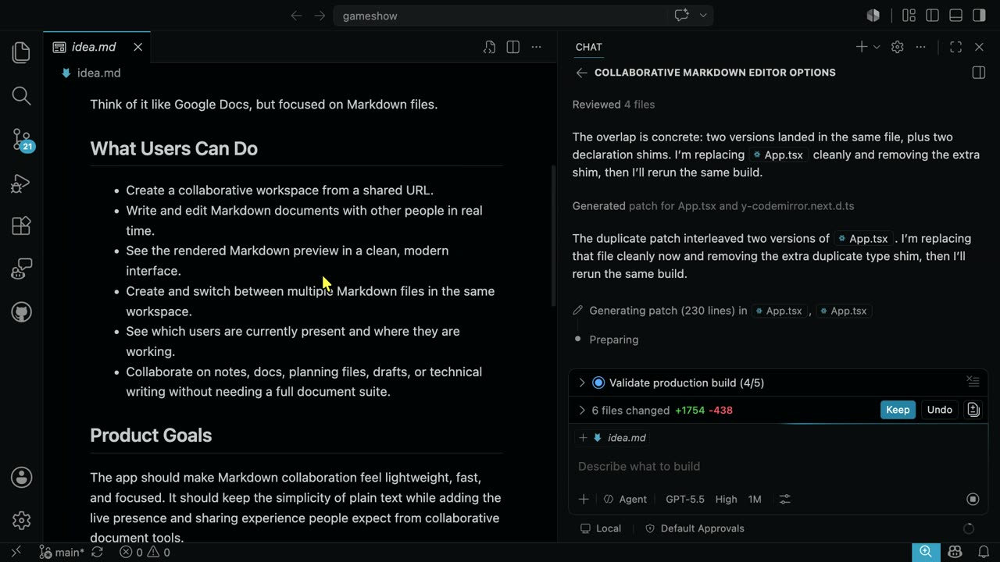
{kind=link}
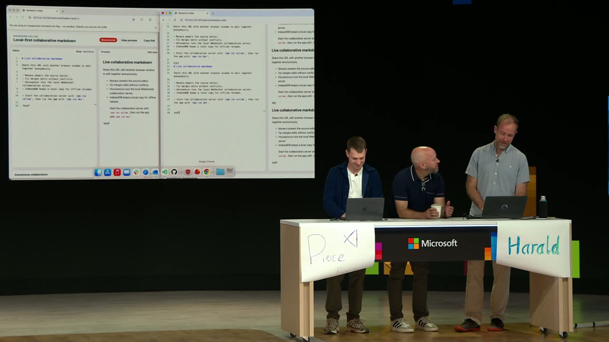
{kind=link}
{kind=link}
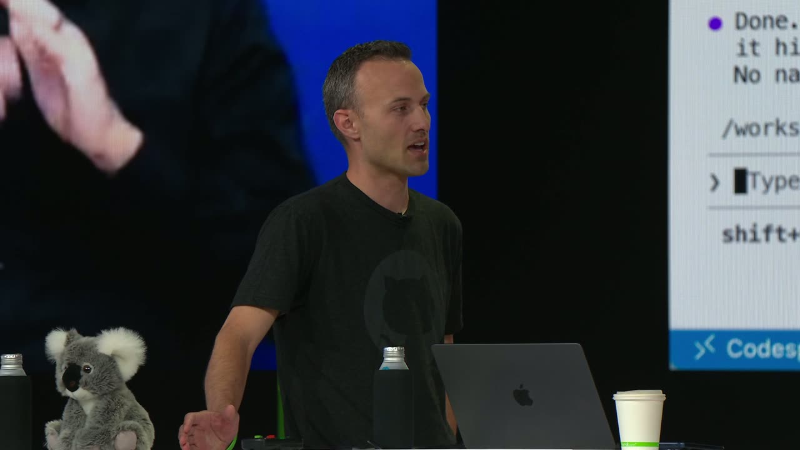
{kind=link}
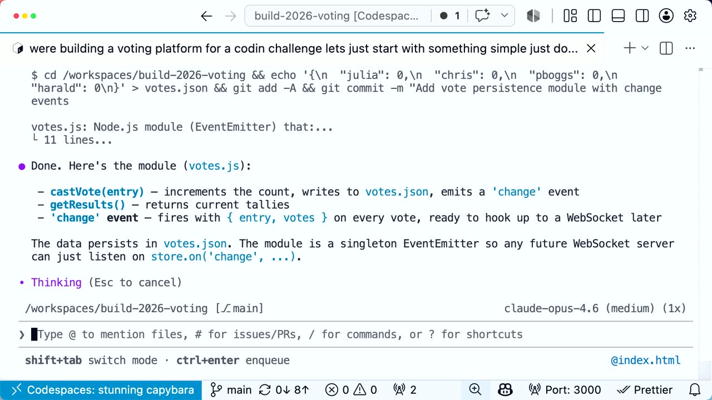
{kind=link}
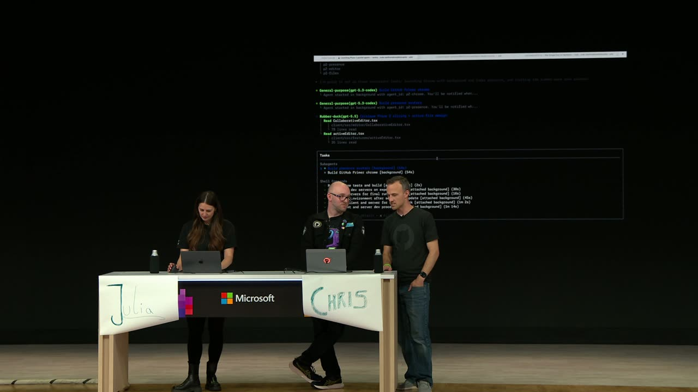
{kind=link}
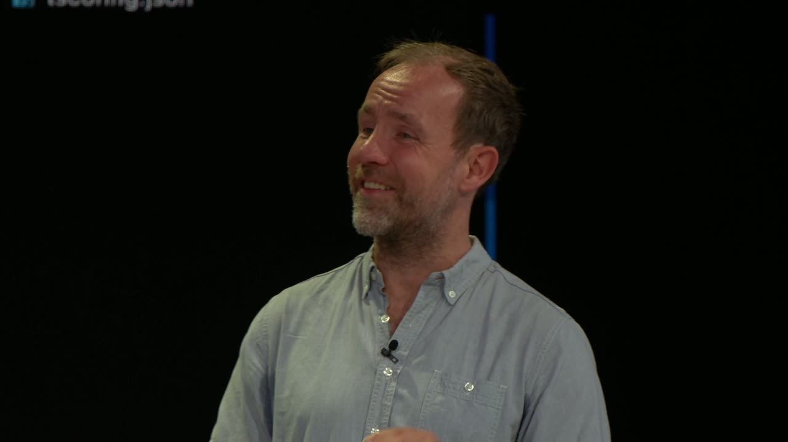
{kind=link}
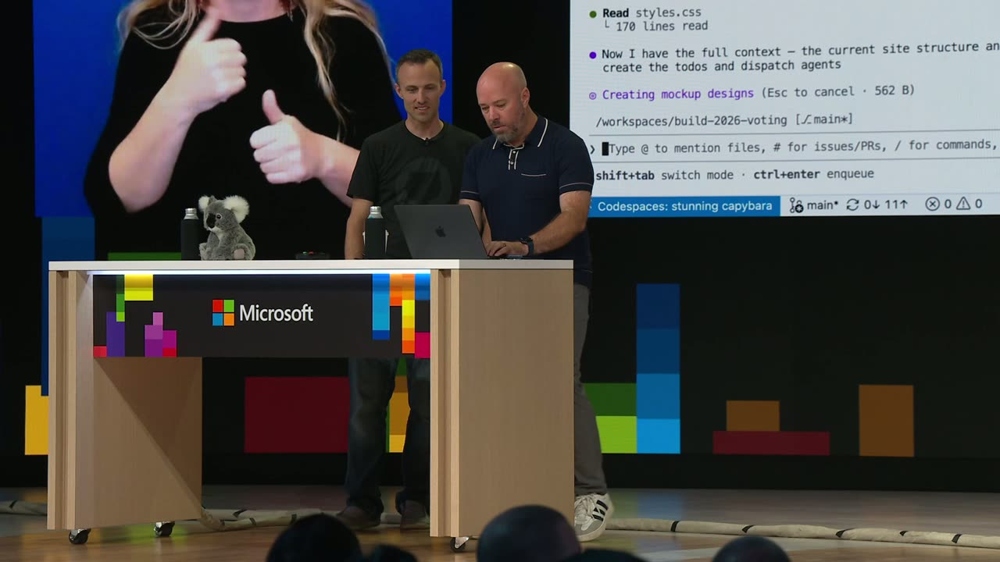
{kind=link}
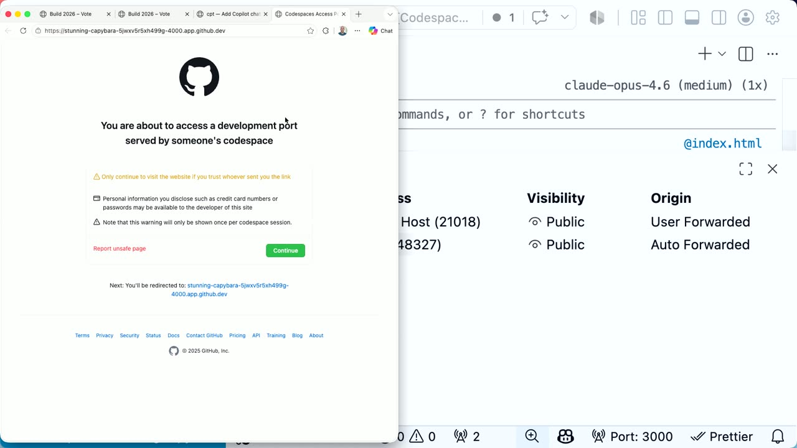
{kind=link}
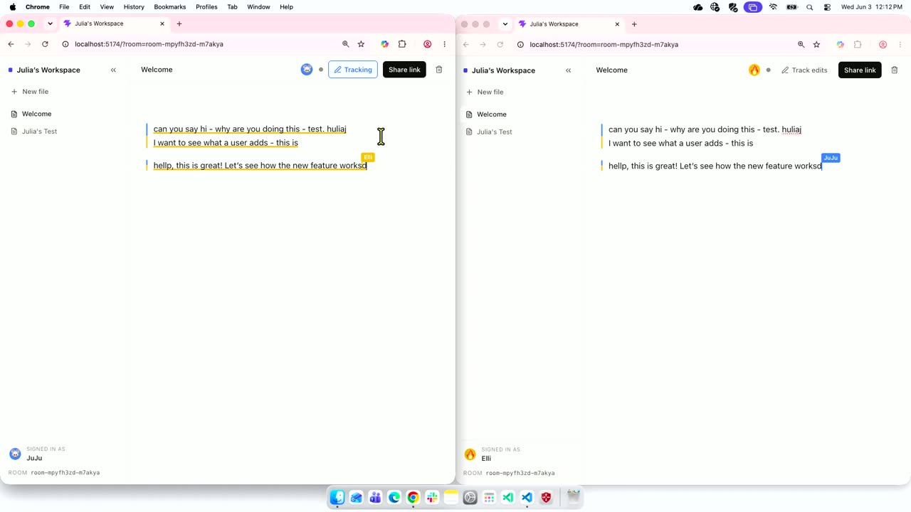
Transcript
Show / hide transcript (50,586 chars)
[00:00:04] we're live. Okay. [00:00:08] transition. Hey. Welcome, [00:00:08] everyone. We're so [00:00:12] you here. This is multi-agent [00:00:12] patterns in VS code. You [00:00:16] learn from the docs. But more [00:00:16] importantly this is a live [00:00:20] coding competition. And before [00:00:20] we get started, this is my [00:00:24] Dodds. Hello, everybody. All [00:00:24] right. And [00:00:28] exercise. Oh yeah. That's right. [00:00:28] So [00:00:32] coming in, every time I give a [00:00:32] talk, I like [00:00:36] blood flow going because it's [00:00:36] good for your brain. So you [00:00:40] invite everybody to please [00:00:40] stand. If you're physically [00:00:44] I'll let's step over to the [00:00:44] side so they can observe [00:00:48] arms out like this. Squat down, [00:00:48] come back up. This is called [00:00:52] exercise. We're gonna d [00:00:56] up. You gotta count out loud. [00:01:00] we'll start with. Ready? One, [00:01:00] two. You gotta count with me. [00:01:04] Three, four. Oh, you're doing [00:01:08] so good with this as well. [00:01:12] deep if you really need it. Or [00:01:12] just like a little bit. I lost [00:01:16] count one. That's ten. Okay. [00:01:20] No and 12. Okay. Stretch out [00:01:20] and over to one [00:01:24] other. All right. Awesome. [00:01:28] Feeling good? Everybody's awake [00:01:28] no [00:01:32] have a live. What we're gonna [00:01:32] do here today, folks, is a live [00:01:36] vibe coding competition [00:01:40] year. Who's who watched this [00:01:40] last year, you were a [00:01:44] you watched this a couple of [00:01:44] folks. So last year let me just [00:01:48] let me just baseline for you [00:01:48] where we are in human history. [00:01:52] Last year at this time, OpenAI [00:01:52] had just released GPT 4.1. Okay, [00:01:56] that was 12 months ago. And [00:02:00] last year we made [00:02:04] of Frogger. And then you voted [00:02:04] on [00:02:08] most. They made it from scratch [00:02:08] this year, right [00:02:12] lot different. We now have much [00:02:12] more capable models. And so [00:02:16] this year, oh [00:02:20] illustrious co-host. This year [00:02:20] we have Kenzie [00:02:24] been prolific as long as I've [00:02:24] been alive, much li [00:02:28] Tell us a bit about yourself [00:02:28] and. [00:02:32] software developer primarily in [00:02:32] JavaScript, and the web i [00:02:36] jam and I'm a full time [00:02:36] educator [00:02:40] to build excellent user [00:02:40] experiences. These [00:02:44] need to know how to actually do [00:02:44] the [00:02:48] much. And so I'm focused on [00:02:48] teaching people how to know [00:02:52] what to build. And so if you're [00:02:52] tired of building the wrong [00:02:56] All right, so we're going to [00:02:56] get some free. I [00:03:00] some free instruction from Kent [00:03:00] as these folks live code. [00:03:04] This year we're going to take [00:03:04] it up a n [00:03:08] thinking, yeah, which one [00:03:08] should we have them build? [00:03:12] Hello one. I'm [00:03:16] yelling out AI could do [00:03:20] anything. It's gonna write [00:03:20] number two. That's true. GTA [00:03:24] GTA six never coming. Never. [00:03:24] Numb [00:03:28] actually not. We can't do it. [00:03:28] We can't do [00:03:32] could do, though, is what if we [00:03:32] did? What if we solved [00:03:36] problem with AI folks instead [00:03:36] of building snake games? I saw [00:03:40] someone had tweeted this out on [00:03:44] X and they said, this. [00:03:48] for markdown I need a cloud [00:03:48] based col [00:03:52] we're going to build today? [00:03:56] based collaborative markdown [00:03:56] ed [00:04:00] Let me introduce our [00:04:00] contestants here. First we [00:04:04] Julia from the VSCode team. [00:04:04] Hello, hello, Julia. And [00:04:08] code and the local agent in VS [00:04:08] code. Here we have all the way [00:04:12] from the UK. [00:04:16] Chris Reddington. Hello [00:04:16] everyone. Chris is going t [00:04:20] coding by hand. Good luck [00:04:20] writing down. [00:04:24] be using the copilot CLI to do [00:04:24] the challenge further down this [00:04:28] way, another 50 yards down [00:04:32] field. Here we have Mr. Pierce [00:04:32] Boggan PM on the VS code team. [00:04:36] Yep. You will be using the [00:04:40] app, the new copilot app. And [00:04:40] over here [00:04:44] who's going to be using the [00:04:44] agent app, the new agent app. [00:04:48] Do we have enough apps for [00:04:48] doing [00:04:52] Everybody's got their workflow. [00:04:52] And then while they do that, we, [00:04:56] Kent and I are going to build a [00:05:00] on the winner, and Kent's going [00:05:00] to ins [00:05:04] to do this correctly. So with [00:05:04] that, you [00:05:08] Harold. Harold, get your hands [00:05:08] off that cloud. I saw that the [00:05:12] stakes here are very high. Yeah. [00:05:16] Your first task is to just [00:05:16] input that prompt [00:05:20] go from there, but you have to [00:05:20] start [00:05:24] product probably already exists, [00:05:24] but [00:05:28] anyway because it hasn't been [00:05:28] built here. Okay. So while they [00:05:32] do that, do we have any [00:05:36] mark, get set, go. I think some [00:05:36] of them have [00:05:40] already gone on your mark, get [00:05:40] set. Go. All right. It's [00:05:44] think we have any more slides. [00:05:44] Yeah we [00:05:48] to that. All right. So if you [00:05:48] would Steve. Steve, throw up [00:05:52] computer. This one here. So [00:05:52] Kent and I are going to build [00:05:56] the voting experience for this. [00:05:56] And we are going to be [00:06:00] Now, the reason why we're doing [00:06:00] this is because agents are kind [00:06:04] of dangerous. [00:06:08] only way to be productive with [00:06:08] an agent is to put it into [00:06:12] let it do its thing. But a lot [00:06:12] of [00:06:16] inherently unsafe. And so we're [00:06:16] going to be [00:06:20] which means it's not on our [00:06:20] machine, and [00:06:24] protections on code spaces to [00:06:24] keep your keys from getting [00:06:28] let the, the agent kind of run [00:06:32] about it. Yeah, it's going to [00:06:32] be awesome. [00:06:36] we can even have it run a [00:06:36] server and make it public [00:06:40] actually do the voting and [00:06:40] stuff. And it's [00:06:44] Pretty cool. Correct? Yeah. [00:06:44] We're going to, you're going to [00:06:48] environment and nothing is [00:06:48] going to go wrong. We are safe. [00:06:52] where, where do we start? We're [00:06:52] here. Yeah, [00:06:56] doing? We've got it all set up. [00:06:56] I don't know, I think [00:07:00] primarily using. Well, no, this [00:07:00] is with the CLI. Correct? Right. [00:07:04] Okay. In Visual [00:07:08] this is my preferred method in [00:07:08] an editor tab. Yeah. Perfect. [00:07:12] So I think I don't know, let's [00:07:12] just [00:07:16] mistakes. Right. And that's and [00:07:16] then we can just go razz t [00:07:20] no mistakes. No, don't say that. [00:07:20] No I'm j [00:07:24] let's think about like as think [00:07:24] as a produ [00:07:28] epic product engineers. My [00:07:28] thing. [00:07:32] product actually supposed to do? [00:07:32] Okay. It needs to be a web page. [00:07:36] So that's the, the [00:07:40] They probably need to know what [00:07:40] th [00:07:44] maybe we could do numbers like [00:07:44] one, two, three, or four. [00:07:48] needs to visually show in real [00:07:48] time what the [00:07:52] one of those things. And it [00:07:52] needs to, [00:07:56] winner somehow, either by us [00:07:56] saying like, finalize or we [00:08:00] yeah, we click on it or [00:08:04] something. Yeah. Okay. So I [00:08:04] want to break this down to like [00:08:08] is high stakes. We've got 36 [00:08:08] minu [00:08:12] able to get to a point where, [00:08:12] okay, [00:08:16] stuck with this, and then we [00:08:16] can commit and then keep [00:08:20] adding stuff to that. So why [00:08:20] don't we just start with a [00:08:24] page that says what it is and [00:08:24] that's it. Okay, so just a [00:08:28] I think I have, do I have voice [00:08:28] mode [00:08:32] actually get that deployed. And [00:08:32] once once [00:08:36] this machine, then the next [00:08:36] thing we can do is get the QR [00:08:40] access access it. Okay, so what [00:08:40] am I asking for? [00:08:44] we're building a voting [00:08:44] platform for a coding challenge. [00:08:48] Let's just start with [00:08:52] simple. What are you using? [00:08:52] Just use a homepage. I'm using [00:08:56] web art and we'll see what it [00:09:00] you seen that, that visual [00:09:00] where you've got [00:09:04] where it's like, we build this, [00:09:04] this [00:09:08] what the customer wanted. And [00:09:08] there's, t [00:09:12] it's nothing like what you want. [00:09:16] want. And then agile is like, [00:09:16] it's a scooter and then or [00:09:20] and then it like it completely [00:09:20] changes as you go. [00:09:24] with AI. It's like it starts [00:09:28] these different features that [00:09:28] you don't want, and then you [00:09:32] things. And so that's one of [00:09:32] the beauties of [00:09:36] just kind of being free like [00:09:36] this is you just say, I [00:09:40] we'll like chip away and [00:09:40] iterate on [00:09:44] right, so what are we doing [00:09:44] here? What's our stack? Wow. [00:09:48] mode I suppose. And it's [00:09:48] thinking I don't [00:09:52] any planning. It just did this. [00:09:52] Yeah. Okay. So you're never [00:09:56] Nextjs. We can talk about that [00:09:56] later [00:10:00] this so we do have some like [00:10:00] real [00:10:04] there. So you might think, okay, [00:10:04] well, I want like a [00:10:08] built some pretty amazing [00:10:08] things with AI with [00:10:12] vanilla. And I honestly, for, [00:10:12] for a one pager, like we've g [00:10:16] think we can get it done? Oh, [00:10:16] yeah. Okay. All righ [00:10:20] Here we go. Let's see here. All [00:10:20] right. It's creating the [00:10:24] page. The cool thing about this [00:10:24] too is like this. This [00:10:28] not going to get so big that we [00:10:28] need to have like some [00:10:32] process or whatever. So this is [00:10:32] actually going to be [00:10:36] about a build or anything like [00:10:36] that. [00:10:40] we will. We won't have hot [00:10:40] matcha replacement o [00:10:44] that. So yeah, I do miss the [00:10:48] HTML and JavaScript and make a [00:10:48] web page. We're pretty [00:10:52] that. But yeah, so interesting. [00:10:52] So we're starting from sor [00:10:56] thing I noticed you kind of [00:10:56] skipped the [00:11:00] Oh yeah, I do not, I actually [00:11:00] don't plan like the, the, the, [00:11:04] the conversation is [00:11:08] and you iterate on that to get [00:11:08] to the ultimate end [00:11:12] thing. And so it's going to be [00:11:16] of hundreds of thousands or [00:11:20] you're working in. But the idea [00:11:20] is pretty [00:11:24] when I'm building a new feature [00:11:24] in a bigger app, I'm [00:11:28] agent. And I'm going to say [00:11:28] like, first [00:11:32] the answer to because I want [00:11:32] the agent t [00:11:36] those questions in the context [00:11:36] about like [00:11:40] primitives. And then we iterate [00:11:40] on, on that. And once we have [00:11:44] with the stuff I want, then [00:11:44] I'll say, great, go. All [00:11:48] so we have this looks so AI [00:11:48] created. People can. Yeah, [00:11:52] in a second. Okay. The purple [00:11:52] and the dark. Yeah. [00:11:56] should we, should we pause this [00:11:56] and go Razzi. I kind of kind [00:12:00] get to 30 here. Okay, okay, get [00:12:00] three minutes, [00:12:04] and then we're going to come [00:12:04] bug [00:12:08] where do we go from here? We [00:12:08] have a should we [00:12:12] think we need a QR code so [00:12:12] folks can actually. Yeah. Yeah. [00:12:16] on here I want to get rid of, [00:12:16] which [00:12:20] want to get rid of the sign in [00:12:20] and different stuff [00:12:24] just get a QR code so people [00:12:24] can [00:12:28] phones. So I literally, I would [00:12:28] say people are going to [00:12:32] their phones. So let's put a QR [00:12:32] code on [00:12:36] page. And I'm, it won't know [00:12:36] the URL. So I'll put [00:12:40] give it that. Just say window [00:12:40] dot loc [00:12:44] Really? Yeah. You can make a QR [00:12:44] code in the, in the [00:12:48] Yeah, just say window dot [00:12:48] location. It'll get i [00:12:52] Sure. So it's just going to [00:12:52] pu [00:12:56] Okay, I'm with you. And I'm [00:12:56] cu [00:13:00] plain HTML and CSS and [00:13:00] JavaScript. It's not going to [00:13:04] mean, there are mechanisms that [00:13:04] could use to go get a libra [00:13:08] implement it itself, which [00:13:12] just going to add it from [00:13:12] scratch. Yeah. I'm kind of [00:13:16] it's doing? Okay. Well, hey, it [00:13:16] added a QR QR [00:13:20] probably pulling it from yeah, [00:13:20] the CDN. Yep. Let's take a look. [00:13:24] All right. Let's see [00:13:28] then I want you all to scan [00:13:28] this if it [00:13:32] will show us something. Or we [00:13:32] can tell [00:13:36] just say agent didn't work. How [00:13:36] do you o [00:13:40] PC guy. Oh. Command option I. [00:13:40] There we go. There you go. Yeah. [00:13:44] So we've got QR codes not [00:13:48] went in the network, you'd see [00:13:48] that the request for the [00:13:52] It probably got the wrong. Yeah. [00:13:52] There it is [00:13:56] okay. So we can go this right [00:13:56] here. Yeah. Just wrong. [00:14:00] not working. It could be one [00:14:00] thing that I [00:14:04] would just tell it use [00:14:04] Unpackage instead. Okay, so [00:14:08] Unpkg instead. So for those not [00:14:08] familiar, Unpackage is a free [00:14:12] service that you basically [00:14:16] package and you can give it [00:14:16] like whatever version and it [00:14:20] will resolve to the the main [00:14:24] module of that package. So it's [00:14:24] pretty cool. I don't know if [00:14:28] at your own risk. We are [00:14:28] risking [00:14:32] What happened? I don't know, [00:14:32] I'm not even [00:14:36] that I didn't know it's gone. [00:14:36] And there's definitely no thi [00:14:40] does happen sometimes. What did [00:14:40] it do? Okay, interesti [00:14:44] Okay. You remember those days [00:14:44] when [00:14:48] Well, we are doing vanilla. So [00:14:48] we can view source. You [00:14:52] want to just view the source. [00:14:52] I've been [00:14:56] source right there since man, I [00:14:56] don't think I've done that in [00:15:00] years. Okay, so if you click on [00:15:00] the QR code, man, [00:15:04] resolve. Nope, still not found. [00:15:04] So yeah, that's our issue. Why [00:15:08] back up? Okay. And there's a [00:15:08] way o [00:15:12] contents of the package. So [00:15:12] update the URL and remove [00:15:16] everything up to where it says [00:15:20] build. Yeah. [00:15:24] after everything after that, [00:15:24] and leave [00:15:28] that will give us a browse page [00:15:28] for this. And now we [00:15:32] going on? Maybe they released a [00:15:32] new version and [00:15:36] it was two years ago. But yeah, [00:15:36] let's maybe go to go to bed. [00:15:40] Maybe what? The octet [00:15:44] extension. Wow. I tell you what, [00:15:44] I'm gonna let [00:15:48] Okay? Check in with these folks [00:15:48] down here. Your job is to [00:15:52] QR code working. All right, I [00:15:52] will do that. All right, Steve, [00:15:56] Julia's machine here. Hey, [00:15:56] Julia. Hello. How's it [00:16:00] through what I did? Yeah. Let's [00:16:04] is still working. Okay. What's [00:16:04] going on? Show me [00:16:08] All right, so, as you said, I [00:16:08] should be using agent mode and [00:16:12] local in VS code. I picked GPT [00:16:16] 5.5. Okay, on high reasoning. [00:16:16] High reasoning. Interesting [00:16:20] lot of the model launches in VS [00:16:20] code. And one of the [00:16:24] model providers and OpenAI, I [00:16:24] mentioned [00:16:28] many opus front end UI builds, [00:16:32] their latest models better and [00:16:32] front end devel [00:16:36] wanted to give GPT 5.5 for a [00:16:36] test with my white [00:16:40] scaffolded here. So yeah, I [00:16:40] used high [00:16:44] created an ID or MD file. So [00:16:44] let's switch over and see what [00:16:48] it came up with. And [00:16:52] little bit of like what users [00:16:52] can do. And after [00:16:56] it, okay, perfect. Let's just [00:16:56] go and execute based on this [00:17:00] still working. So I don't know [00:17:00] how it's going to look [00:17:04] going to one shot the whole [00:17:04] thing. I love it [00:17:08] Chris. Hey. Hi. How are we [00:17:08] doing? Pretty good. How are you? [00:17:12] time. Are you done? No. Okay. [00:17:12] But you got so far, [00:17:16] got, like, an outline. We've [00:17:16] got a text box. Like [00:17:20] good. Does it support markdown? [00:17:20] Probably. Maybe [00:17:24] through it. So what I've done [00:17:24] is we've kicked off like [00:17:28] that's kind of a pattern I use [00:17:28] typically is have [00:17:32] does like a plan and builds it [00:17:32] out. And then you have some sub [00:17:36] to do the orchestration just [00:17:36] fleet? No. So I'm just [00:17:40] some prompting. So I'm telling [00:17:40] it uses sub agent to do this. [00:17:44] got yours full screen and [00:17:44] you're swiping over to [00:17:48] normally work? Yeah. I normally [00:17:48] have multiple tabs [00:17:52] but you're using workspaces [00:17:52] specifically to. Yeah, [00:17:56] Yeah, exactly. Interesting. And [00:17:56] yeah, so we've got opus [00:18:00] kind of planner. So that more [00:18:00] powerful model. So you picked [00:18:04] opus. Yep. She picked GPT five. [00:18:04] Yeah. But then I'm having C [00:18:08] do the implementation. Oh [00:18:08] really? Oh Codex. Oh well. [00:18:12] way, y'all, special round of [00:18:12] applause for [00:18:16] all the new models in Visual [00:18:16] Studio Code and copilot. So [00:18:20] that's Julia. Can we give Julia [00:18:20] a round of applause? [00:18:24] of late nights, a lot of late [00:18:24] nights. All right, [00:18:28] boys, what have we got? Pierce? [00:18:28] I'm a little mad [00:18:32] Why? Because I was reflecting [00:18:32] on your prompt. [00:18:36] markdown editing, collaborative, [00:18:36] collaborative time, [00:18:40] And I was thinking, as someone [00:18:40] working on a [00:18:44] you're somewhat familiar with, [00:18:44] that's literally a thing [00:18:48] already like literally it's [00:18:48] called vs code and Live Share. [00:18:52] I literally already have done [00:18:52] this, this, I'm done [00:18:56] thing. You have to build it. [00:18:56] This is already a thing. Don't [00:19:00] encourage him. Stop it. So I [00:19:00] started with with a [00:19:04] GitHub copilot app. So we [00:19:04] started in plan mode. [00:19:08] five high was kind of where I [00:19:08] started. We built [00:19:12] was I was a little sad. Plan [00:19:12] mode did not recommend [00:19:16] as the base did it. Not. By the [00:19:16] way, Monaco is the editor that [00:19:20] But did it give you Code Mirror? [00:19:20] It gave me like five [00:19:24] of that. So so plan mode, it [00:19:28] started its thing. It's working [00:19:28] right now. And I think we have [00:19:32] But this is all fake. Like I [00:19:32] went over [00:19:36] same as this. So we have work [00:19:36] to do. Well, real time [00:19:40] be easy. This is a soft problem. [00:19:40] Just make it work. Exactly. All [00:19:44] Last but not least, you're my [00:19:44] favorite one, by t [00:19:48] much. All right. I started with [00:19:48] with research on what is out [00:19:52] there. So that was my [00:19:56] one session. Like, what are [00:20:00] report that I want to rip off [00:20:00] all the ideas or pick the best [00:20:04] based on what artists [00:20:08] right? Yes. Especially if I [00:20:08] want to ship within 45 minutes [00:20:12] And then I, then I did actually, [00:20:12] I [00:20:16] exploration where we have three, [00:20:16] three [00:20:20] There's one, one idea is here, [00:20:20] not just [00:20:24] of how this could look like [00:20:24] what we have. See, we have [00:20:28] it might look like. Mock up. [00:20:28] Yeah. Just [00:20:32] agent out and let it show me [00:20:32] like, oh, this is [00:20:36] manage session maybe. Or the [00:20:36] other one is more on a [00:20:40] rationale around making an [00:20:40] review easier an [00:20:44] editing works because we all [00:20:44] need to manage [00:20:48] When you throw me back into a [00:20:48] plan I really like, I think the [00:20:52] A has like a little post-it [00:20:56] is it? Little post-it? There's [00:20:56] B, I think so [00:21:00] favorite, but this one doesn't [00:21:00] fit into the [00:21:04] analysis. Yeah, I want that. So [00:21:04] all right. [00:21:08] I want to post it. So good luck [00:21:08] folks. Looking good. Let's [00:21:12] Kent's doing on our QR code. [00:21:12] All we need [00:21:16] hard could this be? Hey, let's [00:21:16] go round of applause, please. [00:21:20] impressive, I don't know how to [00:21:20] impress you. All [00:21:24] can scan this if you want to do [00:21:24] it now. And then you'll have [00:21:28] you'll need to click the little [00:21:28] disclaimer there that [00:21:32] codespace. It's fine to worry [00:21:32] about it. Don't read it. Just [00:21:36] Where? We'll leave this up here [00:21:36] for a second. I [00:21:40] still up. Make sure I removed [00:21:40] the sign in page. I made it [00:21:44] is the best mode. Light mode is [00:21:44] the best mode. Sorry, can't set [00:21:48] it. Can't argue with Kent. And [00:21:52] so right now it's actually [00:21:52] working on cha [00:21:56] assumed that we wanted to do [00:22:00] we're just going to have it as [00:22:04] done. I'm assuming most people [00:22:04] who want it have go [00:22:08] what are the four entries [00:22:08] people will [00:22:12] name, project titles or [00:22:12] placeholder names for now. [00:22:16] names. People names. Yeah. [00:22:16] There you go. We've int [00:22:20] Let me give you the names. Okay, [00:22:20] let's see here. Oh go ahead. [00:22:24] Okay. Go ahead. Julia. Chris P [00:22:32] bogs and Harold. All right. [00:22:36] Super. And once we're finished [00:22:40] with this, then we need to get [00:22:44] it so that we can show some bar [00:22:48] accumulated. Correct. And now, [00:22:48] can these [00:22:52] than once? That is an [00:22:52] interesting quest [00:22:56] it's like, I really, really, [00:22:56] really, really like you can [00:23:00] over again, right? I don't know, [00:23:00] what do you all think? [00:23:04] than once? Who wants to vote? [00:23:04] Wh [00:23:08] fair? Yeah, there we go. There [00:23:08] we go. All right, that's [00:23:12] it's like you. Like you got it. [00:23:12] Who cares [00:23:16] about somebody's gonna write a [00:23:16] script? Do you not [00:23:20] They won't. Look at these [00:23:20] people are all abstaining. [00:23:24] able to vote more than once [00:23:24] anyway, so. Yeah. [00:23:28] Except for that woman in the [00:23:28] back there who was [00:23:32] now. So, so interesting. I gave [00:23:32] it the names [00:23:36] Oh, because it's updating. Yeah. [00:23:36] It's building [00:23:40] Like we're changing quite a bit. [00:23:40] Okay. I noticed that you were [00:23:44] intentional choice. That's the [00:23:44] default when [00:23:48] didn't change it. I was waiting [00:23:48] for you to tell me. Yeah, yeah. [00:23:52] I typically use GPT 5.5 or in [00:23:52] cursor, I'll use two composer [00:23:56] 2.5. Also, that's Kimmy based, [00:24:00] but I looked and this had GPT [00:24:00] 5.4. So I [00:24:04] just stick with opus five fives [00:24:04] here. Oh it is well, let's [00:24:08] then we'll tell it clean up [00:24:08] opus mess. I'm just kidding. Oh, [00:24:12] I wonder if it's [00:24:16] wonder if it's because I'm in a [00:24:16] code space. Oh [00:24:20] account. That's why it's not [00:24:20] there. Yeah, [00:24:24] That's all right. Opus four six [00:24:24] is this is just like a [00:24:28] blast from the past. Come on. A [00:24:28] whole two months ago. [00:24:32] thoughts on opus four six [00:24:32] versus four seven versus [00:24:36] which I will share when we're [00:24:36] not live on air. Okay, [00:24:40] All right, all right. Says it's [00:24:40] done. Let's take a look. Okay. [00:24:44] All right, now we're [00:24:48] the entry. Okay, so what [00:24:48] happens? Are we responsive [00:24:52] Let's see here. We're zoomed in. [00:24:56] a phone. Yeah, it does look [00:24:56] like that. That could [00:25:00] anyway. Yeah yeah. Okay. So [00:25:00] what happe [00:25:04] It's no, there's no yeah. [00:25:04] There's [00:25:08] probably the most important is [00:25:08] like, [00:25:12] in. And then we can do the bars [00:25:12] and whatnot. S [00:25:16] in a code space. There is a [00:25:16] file system. We could [00:25:20] it be like a Json file, or we [00:25:24] could do like I was going to [00:25:24] say we could do SQLite, but [00:25:28] much advantage over just a Json [00:25:28] file for [00:25:32] refresh on everyone's screen. [00:25:32] Yeah. So we're going to have [00:25:36] notification system, like when, [00:25:36] when right then [00:25:40] sort of thing going on. So [00:25:40] we're going to need WebSockets. [00:25:44] Okay. Yeah, I would just [00:25:48] well, we need a server side [00:25:48] module. Okay. That is [00:25:52] responsible for the [00:25:56] we want to save it to a file. [00:25:56] Yeah. So [00:26:00] responsible for persisting the [00:26:00] votes to a Json [00:26:04] module will also be responsible [00:26:04] for keeping track of when [00:26:08] changes are made. And then [00:26:12] we'll [00:26:16] wire this up to a WebSocket do [00:26:16] that later. We got 18 minutes. [00:26:20] Yeah, I [00:26:24] chance. Can we do it? I think [00:26:24] we could possibly w [00:26:28] till the judging. Which one is [00:26:28] it. I [00:26:32] Geez. Okay. So you really have [00:26:32] like [00:26:36] minutes. Yeah. Not that many. [00:26:36] Okay. Yeah. Node node [00:26:40] We got to go. Yeah, I think [00:26:40] we're [00:26:44] feeling confident. We're gonna [00:26:44] make it happen. When we get to [00:26:48] five minutes left, we're going [00:26:48] to say, finish it. No mistakes [00:26:52] Just finished. And it'll [00:26:52] probably w [00:26:56] we've taken here to make this [00:26:56] happen. [00:27:00] curiosity, how many folks in [00:27:00] the audience are using Visual [00:27:04] Studio and working with agents? [00:27:08] All right, Visual Studio, [00:27:08] Visual Studio Code. Hey, [00:27:12] we go. Let's go. Anybody using [00:27:12] the new GitHub [00:27:16] Wow. That's quite a few hands. [00:27:16] Yeah. T [00:27:20] in Visual Studio Code? Any [00:27:20] folks [00:27:24] hands there. CLI where am I cli [00:27:24] people [00:27:28] Very nice. Nice mix of folks [00:27:28] here. Hey, we got something. [00:27:32] Okay. So. Data persists. So [00:27:36] normally I would like to to [00:27:40] any future websites. That's [00:27:40] exactly how I would do it. [00:27:44] And that's why I said we're [00:27:44] going to wire this up to [00:27:48] okay, I'm going to need some [00:27:48] sort of event publishing. Okay, [00:27:52] that we're at the point where [00:27:56] we can say, no, let's, let's [00:27:56] just do record a vote. So [00:28:00] When I click, it should record [00:28:00] the vote or like make a request [00:28:04] to record should make a request [00:28:08] to record a vote. Yeah. Okay. [00:28:12] not using voice mode because [00:28:16] did not do the due diligence of [00:28:16] installing voice mode. [00:28:20] do not need to correct your [00:28:20] misspellings. I [00:28:24] barely words. Sometimes it [00:28:24] doesn't matter. [00:28:28] extremely good at language. [00:28:28] That's what they do. So you [00:28:32] Backspacing, stop doing that. [00:28:32] You don't have to get it right [00:28:36] second language, just talk to [00:28:36] it in your [00:28:40] that too. It's really good. [00:28:40] It's brilliant. You [00:28:44] AI where they were talking [00:28:44] about how like in the [00:28:48] in a language that we don't [00:28:48] understand because it's more [00:28:52] thinking, what is the most [00:28:52] efficient [00:28:56] communicate in? It's certainly [00:28:56] not English. Does anyone know? [00:29:00] Anybody have any guesses? [00:29:04] is the most efficient language [00:29:04] for the AI to communicate in? [00:29:08] You can throw a hot take out [00:29:08] there. That's okay. [00:29:12] What would you say? Mandarin. [00:29:12] That's one of [00:29:16] the top. That's like number two. [00:29:16] No, no, we [00:29:20] do you have an answer? Yeah, I [00:29:20] know the answer. Oh, okay. [00:29:24] because English is like a [00:29:24] really [00:29:28] language, right? Like if I use [00:29:28] a word like bucolic, t [00:29:32] a lot to the agent. And also [00:29:36] Yeah, that makes sense. [00:29:36] Currently that is the [00:29:40] interesting that is interesting. [00:29:40] Yeah, yeah. I'm just trying [00:29:44] here. Okay. Let's check in with [00:29:44] our contestants while [00:29:48] what, you check in. I'm gonna. [00:29:48] Okay. Yeah. [00:29:52] should. Probably ten minutes. [00:29:52] How are [00:29:56] I'm feeling confident. I did [00:29:56] have to switch my mod [00:30:00] switch to? I switched to an [00:30:00] opus. One opus. Okay. And so [00:30:04] the GPT 5.5 did a great job [00:30:08] And then it messed up a little [00:30:08] bit of my UI. So I [00:30:12] and I had to let a little bit [00:30:12] of a UI finish, [00:30:16] 4.6. And this is what I have so [00:30:16] far, so sweet. As you [00:30:20] two windows, split windows. [00:30:20] This one is the [00:30:24] users and you can see, hey, it [00:30:24] notices the users. I can go in [00:30:28] and I can type stuff I hope [00:30:32] this nice and responsive. It's [00:30:32] fast. I [00:30:36] noticed is I wanted to update [00:30:36] the username [00:30:40] user, but it's supposed to be [00:30:40] two. I like [00:30:44] thing. I like that too. I do [00:30:44] want to do [00:30:48] tweaking on what you can do [00:30:48] here. But yeah, so far I [00:30:52] impressed. Yeah, I'm loving [00:30:52] that. Awesome. Okay. [00:30:56] It's sorry. It's Chris right. [00:30:56] It is. Sorry. I just [00:31:00] double check that. So you're [00:31:00] working in the CLI. We are. [00:31:04] here you go. Yes. I feel like [00:31:04] I'm looking like [00:31:08] for Google Docs sort of thing. [00:31:08] You know go and put it in. [00:31:12] We got a thing. Say it's not so [00:31:12] pretty yet. But I mean you're [00:31:16] rendered out stuff. I'm [00:31:16] impressed by tha [00:31:20] Awesome job. Keep doing that. [00:31:20] All r [00:31:24] Pierce. All right. So I'm in [00:31:24] the browser here inside the [00:31:28] editor slash preview for [00:31:28] markdown. And if [00:31:32] here got some real responsive, [00:31:32] got some real time stuff going [00:31:36] on. So next up for me got add [00:31:40] demo is not complete with like [00:31:40] colon [00:31:44] Correct. Yeah. And then I [00:31:44] wanted lik [00:31:48] So I'm gonna go do that and [00:31:48] then [00:31:52] also gonna have like just [00:31:52] generate this [00:31:56] can vibe even more. Okay, using [00:31:56] copilot SDK. So we got some [00:32:00] I'm a little nervous. That's a [00:32:00] lot for [00:32:04] see where we land. I love the [00:32:04] ambition and you're just [00:32:08] scope creeping on all of us [00:32:08] right now. That's exactly how I [00:32:12] Harold, how is it going here? [00:32:12] It's already done. It's. Whoa, [00:32:16] whoa. Really? This is the app. [00:32:20] No, this is the prototype based [00:32:20] on the three prototypes. Before [00:32:24] These are the features I want. [00:32:24] Make me a combined one. So. [00:32:28] then I gave this prototype. It [00:32:28] did also an analysis on w [00:32:32] was like a separate research [00:32:32] query I ran. And [00:32:36] the research plus the prototype. [00:32:36] And now [00:32:40] doing that on different work [00:32:40] tree [00:32:44] wins. Okay. Hey, so they all [00:32:44] got [00:32:48] like one was build it based on [00:32:48] my copilot CLI sessions and [00:32:52] The other one, I had a [00:32:52] different spin. So I just more [00:32:56] agents. Yeah, y [00:33:00] the best winner. I tried it [00:33:00] last time too and I think I [00:33:04] I didn't win, but in your heart [00:33:04] you won. You know what in [00:33:08] heart you might win this time [00:33:08] too. Yes. You're not very cost [00:33:12] sensitive. I notice you're just. [00:33:12] Why three? Why not 12? [00:33:16] of them run on GPT and another [00:33:16] one on som [00:33:20] Yeah, yeah. See what makes [00:33:20] better, I lov [00:33:24] Good luck. One one's done. [00:33:28] Let's see. Now we're going. [00:33:28] Okay, so [00:33:32] coming out of my sessions [00:33:32] already. So this is a full like [00:33:36] full pro [00:33:40] but you're doing the whole [00:33:40] thing. No, no, [00:33:44] empty clearly says don't build [00:33:44] a product. We build a conce [00:33:48] migrations. Oh, right. Yeah. [00:33:48] Like that. If I, if I pivot [00:33:52] right? Yeah. You want to make [00:33:52] this as [00:33:56] one this is the, my, my [00:33:56] favorite thing to tell. [00:34:00] many of you all did an agents. [00:34:00] MD? Yeah, I didn't. Oh, [00:34:04] Awesome. Well, cool. I'm [00:34:04] looking f [00:34:08] Harold. Good luck. Good luck to [00:34:08] everybody. How are we doing? [00:34:12] on this, or are we going to [00:34:12] hands? I don't know, I don't [00:34:16] know. So I was able to that's [00:34:20] interesting. It says 127. It's [00:34:24] anyway. So I was able to make [00:34:24] it so that when [00:34:28] And so Julia gets recorded one [00:34:28] vote. [00:34:32] the WebSocket said that it did. [00:34:32] So theoretically. [00:34:36] open, just refresh that one. [00:34:36] There [00:34:40] do this on Mac, right? You can [00:34:40] put, you can arrange win [00:34:44] this one here, let's just [00:34:44] refresh. [00:34:48] Let me make sure this is [00:34:48] refreshed too. We should be. Oh [00:34:52] okay. Are [00:34:56] just try it. Can we test it out. [00:34:56] Can you. [00:35:00] have to. Well, no, I have to [00:35:00] make it public first. It's not [00:35:04] here. This will be like, to be [00:35:04] clear, for all [00:35:08] room, this is a trial run. This [00:35:08] is [00:35:12] test before we redesign? [00:35:12] Because I'm [00:35:16] to make this app pop. What do [00:35:16] you want to do? Let's pop [00:35:20] it yet. Here's what we're going [00:35:20] to do. I'm going [00:35:24] four six. And I'm going to use [00:35:24] a skill that I created that [00:35:28] And that esthetic is called [00:35:28] poster board. It's just what I [00:35:32] palette. It defines typography [00:35:32] and it tells the AI [00:35:36] going to do now is I am going [00:35:36] to say, give me ten mocks for [00:35:40] this site. Put them in the same [00:35:44] file, use the poster [00:35:48] esthetic. Can you tell it also [00:35:48] to spawn multiple sub agents to [00:35:52] one at a time? Yes we can. So [00:35:52] what. Well, it's right in the [00:35:56] same file. I'll tell you what [00:36:00] say use the poster board [00:36:00] esthetic. And I'm just going [00:36:04] it installed here. Normally [00:36:04] it's a skill, but it's [00:36:08] the gist. And then if we want [00:36:08] to [00:36:12] we need to do is it control A [00:36:12] to go to [00:36:16] It's just fleet. So there's a [00:36:16] command. Okay. And then the [00:36:20] which work can be parallelized [00:36:20] here. [00:36:24] And so yeah, that's what we're [00:36:24] going to do. So I do this [00:36:28] ten designs. I'll pick the one [00:36:28] that I [00:36:32] I'll iterate on that one and [00:36:32] say, give me another ten [00:36:36] get to something that's fairly [00:36:36] good. And just so [00:36:40] we're after here, like if we go [00:36:40] to, so let's go to [00:36:44] though, but like, here's some [00:36:44] of my projects. L [00:36:48] look like, right? It's the same. [00:36:48] Any of [00:36:52] same. Here's another one, right? [00:36:52] They all have this like similar [00:36:56] are dark, same color schemes. I [00:36:56] like that's what we're doing [00:37:00] here. You have a way you like [00:37:00] to do it and I love it. Yes, I [00:37:04] system and I just keep reusing [00:37:04] it everywhere and it [00:37:08] else do that same sort of thing? [00:37:08] I do [00:37:12] to borrow that. It's great. [00:37:16] enough before to do that. But [00:37:16] but now I can now I'm [00:37:20] iterate with it. Like I don't [00:37:20] like the way [00:37:24] actually did. It's sent off to [00:37:24] an agent [00:37:28] like it could not parallelize [00:37:28] or [00:37:32] the same file. I think so, but [00:37:36] file so you can see them all. [00:37:36] Yeah [00:37:40] the most and we got seven [00:37:40] minutes. Oof, it's close [00:37:44] up on it. All right. What is [00:37:44] what are [00:37:48] y'all? Is there a party or [00:37:48] something? Where are we going? [00:37:52] Is there a movie we should go [00:37:52] to? Any [00:37:56] coming out right now? No, [00:37:56] nothing. [00:38:00] kidding me? Come on. What, are [00:38:04] thing? Yesterday? I didn't even [00:38:04] get to see that. Was [00:38:08] It was pumping. I was loud tech [00:38:08] checking. Oh, was it [00:38:12] it was great. Yeah, it was fun. [00:38:12] I don't know how many of you [00:38:16] to. Can you hear? How did you [00:38:16] hear me say [00:38:20] it was so loud, but like, I [00:38:20] felt it in my chest. [00:38:24] And I was like, what is [00:38:24] happening? That's [00:38:28] know, I had no idea they were [00:38:28] going to be here. And so during [00:38:32] and I'm standing there by the [00:38:32] stairs talking to Kayla, and [00:38:36] around these two guys. And I [00:38:36] look over and I'm like, [00:38:40] right there? And then they went [00:38:40] on that stage. [00:38:44] could have given them a high [00:38:44] fi [00:38:48] a selfie. I could be famous now. [00:38:48] All right. This is the [00:38:52] the era we're in where we just [00:38:52] watch agents cook. Yeah. This [00:38:56] developer should we just like [00:38:56] hope and [00:39:00] and have them actually do their [00:39:00] demos. Oh, it's [00:39:04] test look. So let's go make [00:39:04] this, let's go make this public. [00:39:12] Something's happening. It's [00:39:12] very exciting. Let's make it [00:39:16] public. Import visibility. [00:39:16] Public code spaces are [00:39:20] so easy to. Okay. And then we [00:39:20] need the [00:39:24] to be a bit different. And then [00:39:24] we'll give you a new [00:39:28] Okay, so y'all want to try this? [00:39:28] Let's zoom that o [00:39:32] Julia's already got a vote. We [00:39:32] probably better [00:39:36] we, I guess we'll have to edit. [00:39:36] Oh, [00:39:40] really likes Harold. It's [00:39:40] wo [00:39:44] happening. Is it working on [00:39:44] your phones? Like is [00:39:48] numbers are updating for you. [00:39:48] AM I getting yeses? Yes. [00:39:52] need yes, we need a better [00:39:52] visual. Wow. Julia's. [00:39:56] yourself. Is that you? Can you [00:39:56] vote [00:40:00] betting that they won't let you [00:40:00] vote multiple. Yeah. I wonder [00:40:04] can probably vote again. Don't [00:40:04] do that. No, no, I [00:40:08] there and hammer. Just go. Just [00:40:08] go. Okay. So [00:40:12] here and see if we got some [00:40:16] reset once they've actually [00:40:16] been able to present [00:40:20] solutions. Is it still running? [00:40:20] Oh, and the there we go. [00:40:24] okay. So we have mocks at HTML [00:40:24] has them all. Whoa. What [00:40:28] happened? Oh it's up here. I [00:40:28] see. Can [00:40:32] should be able to. AM I right [00:40:32] side or left side? I'm left [00:40:36] side. Where is the file? It [00:40:40] says it. It says it created it. [00:40:40] Can you command P to it? I [00:40:44] don't see it. Oh. What happened? [00:40:44] It rel [00:40:48] What is going on in my term? [00:40:52] way old ago. Oh hold on. Oh, [00:40:52] sorry. So I should be able [00:40:56] right there. Oh, okay. It was [00:40:56] just took a [00:41:00] It's getting a little. We need [00:41:00] to open four minutes. Yes. So [00:41:04] let's see here. So these are [00:41:04] the mocks we got. Maybe maybe [00:41:08] please open open. [00:41:12] it's supposed to open a preview [00:41:12] but [00:41:16] right. We may just have to run [00:41:16] with it like it [00:41:20] editor. How could that possibly [00:41:20] go wrong? [00:41:24] would say is just I would say [00:41:24] choose the one you like best. [00:41:28] Because we're not at three [00:41:28] minutes. We gotta go. Yeah. [00:41:32] their ideas? Yes. All right. [00:41:32] 20s 20s, y'all, let's start [00:41:36] with Julia. [00:41:40] All right. Throw up the voting. [00:41:40] Let's see what we got. So very [00:41:44] simple, minimalistic UI. I have [00:41:48] it in split screen. So you can [00:41:52] Whatever you want to do, you [00:41:52] can easily add a new [00:41:56] the fun thing I implemented, [00:41:56] you wan [00:42:00] You also want to add some color. [00:42:00] Also bring in the vibe [00:42:04] change the different emojis [00:42:04] that you have. And I also the [00:42:08] implemented, I wanted to track [00:42:08] edits. So if you [00:42:12] want to see who made these [00:42:12] edits and how. [00:42:16] easily share the link. That is [00:42:16] great. Julia here. Let's give [00:42:20] it up for Julia. Awesome. [00:42:24] Chris, what have we got here [00:42:24] now? So we've [00:42:28] sidebar now as well, so we can [00:42:28] go a [00:42:32] files. There we go. We see that [00:42:32] we can go and start a [00:42:36] got like our Wysiwyg kind of [00:42:36] editor ove [00:42:40] little bit like GitHub themed. [00:42:44] halfway through that. I've got [00:42:44] an agent usi [00:42:48] assessing what they look like [00:42:48] so they can kind of [00:42:52] somewhere along the way. So we [00:42:52] need to go. I'm [00:42:56] we go. So that's cool. Yeah. [00:42:56] And we've got these littl [00:43:00] of tiles up the top as well to [00:43:00] represent each of the users. [00:43:04] background to go and get some [00:43:04] like user avatar type things [00:43:08] Awesome job. Chris. Let's give [00:43:08] it up for Chris. [00:43:12] how is it going? You know what? [00:43:12] I [00:43:16] every time he's been the last [00:43:16] one [00:43:20] prepare, I know. Oh, well. Well, [00:43:20] speaking of time to [00:43:24] tried to warn me. Did you at [00:43:24] least [00:43:28] back? Oh, it's working now. Oh [00:43:28] what a. Oh, my API [00:43:32] were talking to Chris, it [00:43:32] didn't work at all. [00:43:36] all the functionality. So look [00:43:36] at this [00:43:40] and you two can scroll halfway [00:43:40] down a page [00:43:44] up. Oh, okay, we got comments. [00:43:48] We got some comments, but you [00:43:48] know, I'm not [00:43:52] awards for design here. Yeah. [00:43:52] Well, you know, Chris, [00:44:00] that. I don't know, I think it [00:44:00] looks li [00:44:04] It's serviceable. Good job. [00:44:04] Let's go. Here it up for Pierce. [00:44:08] And Harold. With one minute [00:44:08] left, you got [00:44:16] got to sell it. Presents [00:44:16] history. No, [00:44:20] two versions with one the [00:44:20] reading room powered by all the [00:44:24] plans that alr [00:44:28] if I refresh, we see it's [00:44:28] reading all the sessions. It's [00:44:32] actually the plan that built [00:44:32] this prototype. So I'm looking [00:44:36] edit mode. So I think the live [00:44:36] editing in Google Docs I'm not, [00:44:40] I don't want to edit markdown [00:44:44] anymore. I w [00:44:52] where you have a commenting and [00:44:52] an activity log, more to like [00:44:56] product manager, so I don't [00:44:56] have w [00:45:00] also do quick prompts and it [00:45:00] has like [00:45:04] So this is, it's featureful and [00:45:04] none of these repos exist. But [00:45:08] this is more prototyping. Cool. [00:45:12] And you have two.